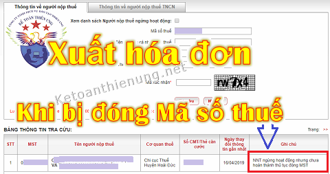

Khi Công ty bị đóng mã số thuế có được xuất hóa đơn? Nếu xuất hóa đơn khi bị cưỡng chế, bị đóng mã số thuế có bị phạt không? Cách xử lý hoá đơn bị cưỡng chế? Kế toán Diệu Tâm xin trính các văn bản quy định về việc đó:
- Việc Doanh nghiệp bị đóng mã số thuế, bị cưỡng chế thì có 1 số lý do như sau: Chuyển địa điểm kinh doanh không thông báo với cơ quan thuế; Không hoạt động tại địa chỉ đã đăng ký kinh doanh; Quá thời hạn nộp tờ khai và nộp thuế, sau 3 lần cơ quan thuế gửi thông báo không thấy phản hồi …
Xem thêm: Thủ tục chuyển địa điểm kinh doanh
-------------------------------------------------------------------
Theo điều 22 Thông tư 39/2014/TT-BTC quy định: Việc Sử dụng hóa đơn bất hợp pháp cụ thể như sau:
"Sử dụng hóa đơn bất hợp pháp là việc sử dụng hóa đơn giả, hóa đơn chưa có giá trị sử dụng, hết giá trị sử dụng.
- Hóa đơn giả là hóa đơn được in hoặc khởi tạo theo mẫu hóa đơn đã được phát hành của tổ chức, cá nhân khác hoặc in, khởi tạo trùng số của cùng một ký hiệu hóa đơn.
- Hóa đơn chưa có giá trị sử dụng là hóa đơn đã được tạo theo hướng dẫn tại Thông tư này, nhưng chưa hoàn thành việc thông báo phát hành.
- Hóa đơn hết giá trị sử dụng là hóa đơn đã làm đủ thủ tục phát hành nhưng tổ chức, cá nhân phát hành thông báo không tiếp tục sử dụng nữa; các loại hóa đơn bị mất sau khi đã thông báo phát hành được tổ chức, cá nhân phát hành báo mất với cơ quan thuế quản lý trực tiếp; hóa đơn của các tổ chức, cá nhân đã ngừng sử dụng mã số thuế (còn gọi là đóng mã số thuế)."
Theo quy định tại Điều 4 Nghị định 125/2020/NĐ-CP về Hành vi sử dụng hóa đơn, chứng từ không hợp pháp; sử dụng không hợp pháp hóa đơn, chứng từ:
1. Sử dụng hóa đơn, chứng từ trong các trường hợp sau đây là hành vi sử dụng hóa đơn, chứng từ không hợp pháp:
a) Hóa đơn, chứng từ giả;
b) Hóa đơn, chứng từ chưa có giá trị sử dụng, hết giá trị sử dụng;
c) Hóa đơn bị ngừng sử dụng trong thời gian bị cưỡng chế bằng biện pháp ngừng sử dụng hóa đơn, trừ trường hợp được phép sử dụng theo thông báo của cơ quan thuế;
d) Hóa đơn điện tử không đăng ký sử dụng với cơ quan thuế;
đ) Hóa đơn điện tử chưa có mã của cơ quan thuế đối với trường hợp sử dụng hóa đơn điện tử có mã của cơ quan thuế;
e) Hóa đơn mua hàng hóa, dịch vụ có ngày lập trên hóa đơn từ ngày cơ quan thuế xác định bên bán không hoạt động tại địa chỉ kinh doanh đã đăng ký với cơ quan nhà nước có thẩm quyền;
g) Hóa đơn, chứng từ mua hàng hóa, dịch vụ có ngày lập trên hóa đơn, chứng từ trước ngày xác định bên lập hóa đơn, chứng từ không hoạt động tại địa chỉ kinh doanh đã đăng ký với cơ quan nhà nước có thẩm quyền hoặc chưa có thông báo của cơ quan thuế về việc bên lập hóa đơn, chứng từ không hoạt động tại địa chỉ kinh doanh đã đăng ký với cơ quan có thẩm quyền nhưng cơ quan thuế hoặc cơ quan công an hoặc các cơ quan chức năng khác đã có kết luận đó là hóa đơn, chứng từ không hợp pháp.
Kết luận:
- Nếu Doanh nghiệp bị đóng mã số thuế, cưỡng chế hóa đơn -> Mà xuất hóa đơn thì đó là hành vi sử dụng hóa đơn bất hợp pháp (sử dụng hoá đơn không hợp pháp).
Xem thêm: Tra cứu Doanh nghiệp bị đóng mã số thuế
------------------------------------------------------------------
2. Sử dụng hóa đơn bất hợp pháp bị phạt như thế nào?Theo quy định tại Điều 28 Nghị định 125/2020/NĐ-CP về Xử phạt đối với hành vi sử dụng hóa đơn không hợp pháp, sử dụng không hợp pháp hóa đơn:
1. Phạt tiền từ 20.000.000 đồng đến 50.000.000 đồng đối với hành vi sử dụng hóa đơn không hợp pháp, sử dụng không hợp pháp hóa đơn quy định tại Điều 4 Nghị định này, trừ trường hợp được quy định tại điểm đ khoản 1 Điều 16 và điểm d khoản 1 Điều 17 Nghị định này.
2. Biện pháp khắc phục hậu quả: Buộc hủy hóa đơn đã sử dụng.
Như vậy:
- Mức phạt đối với hành vi sử dụng hóa đơn bất hợp pháp là: Từ 20.000.000 đồng đến 50.000.000 đồng.
- Và phải huỷ những hóa đơn đó.
--------------------------------------------------------------------
3, Cách xử lý hóa đơn bị cưỡng chế (đóng MST):
Theo Công văn 410/TCT-KK ngày 27/01/2016 của Tổng cục thuế:
2. Về việc áp dụng các biện pháp khắc phục hậu quả đối với hóa đơn sử dụng trong thời gian cơ quan thuế áp dụng biện pháp cưỡng chế nợ thuế bằng biện pháp thông báo hóa đơn không có giá trị sử dụng.
Trường hợp, người nộp thuế sử dụng hóa đơn trong thời gian cơ quan thuế có Quyết định cưỡng chế nợ thuế bằng hình thức thông báo hóa đơn không còn giá trị sử dụng là hành vi sử dụng hóa đơn bất hợp pháp.
- > Cơ quan thuế thực hiện truy thu số thuế phát sinh (nếu có) do sử dụng hóa đơn bất hợp pháp.
- > Các hóa đơn nêu trên không có giá trị sử dụng.
- > Đơn vị bán hàng và mua hàng bị xử phạt vi phạm hành chính về hành vi sử dụng hóa đơn bất hợp pháp.
- > Đơn vị mua hàng không được kê khai khấu trừ thuế GTGT và tính chi phí hợp lý khi xác định thu nhập chịu thuế TNDN.
- > Bên bán hàng và bên mua hàng phải lập biên bản thu hồi các hóa đơn đã lập sai quy định. (Nếu là hoá đơn điện tử thì lập biên bản huỷ)
Xem thêm: Mẫu biên bản thu hồi hóa đơn
- Sau khi Quyết định cưỡng chế nợ thuế hết hiệu lực thi hành hoặc bị bãi bỏ, qua xác minh cơ quan thuế xác định thực tế có hoạt động mua bán hàng hóa, dịch vụ thì cơ quan thuế hướng dẫn đơn vị bán hàng xuất hoá đơn, căn cứ các hóa đơn này đơn vị bán hàng, mua hàng của Công ty thực hiện kê khai thuế theo quy định.
Xem thêm: Xử lý hóa đơn của Doanh nghiệp bỏ trốn
3. Về việc kê khai, tính thuế trong thời gian cưỡng chế hóa đơn
- Trường hợp trong thời gian cơ quan thuế ban hành Quyết định cưỡng chế nợ thuế bằng hình thức thông báo hóa đơn không còn giá trị sử dụng không thuộc trường hợp không phải kê khai theo quy định tại khoản c, Điều 10 Thông tư số 156/2013/TT-BTC ngày 06/11/2013 của Bộ Tài chính.
- > Do đó người nộp thuế vẫn phải kê khai thuế theo quy định.
--------------------------------------------------------------------------------------------
Xuất hoá đơn lẻ khi bị cưỡng chế hoá đơn:
Theo Công văn 4118/TCT-QLN ngày 23/10/2018 của Tổng cục thuế:
- Công văn số 5936/TCT-QLN ngày 21/12/2016 của Tổng cục Thuế về việc sử dụng hóa đơn lẻ hướng dẫn:
“Trường hợp đang áp dụng biện pháp cưỡng chế thông báo hóa đơn không có giá trị sử dụng, nếu người nộp thuế có văn bản đề nghị sử dụng từng hóa đơn lẻ cho từng lô hàng, hạng mục công trình hoàn thành để có nguồn thanh toán tiền lương công nhân, thanh toán các khoản chi phí đảm bảo sản xuất kinh doanh được liên tục thì Cục Thuế các tỉnh, thành phố trực thuộc trung ương thực hiện tiếp tục cho người nộp thuế sử dụng từng hóa đơn lẻ với điều kiện người nộp thuế có văn bản cam kết thực hiện nộp ngay 18% doanh thu trên hóa đơn lẻ được sử dụng vào ngân sách nhà nước.”
Công văn hướng dẫn trên không phân biệt bán tài sản, dịch vụ nào thì được phép sử dụng hóa đơn lẻ và bán tài sản, dịch vụ nào thì không được phép sử dụng hóa đơn lẻ, song chỉ áp dụng cho các đơn vị đảm bảo sản xuất kinh doanh được liên tục.
Đối với các đơn vị đã ngừng sản xuất kinh doanh nay bán tài sản thì Cục Thuế căn cứ tình hình cụ thể để áp dụng biện pháp xử lý cho phù hợp, tránh trường hợp tẩu tán tài sản.
-------------------------------------------------------------------------
Kế toán Diệu Tâm xin chúc các bạn làm tốt công việc kế toán!
- Nếu các bạn muốn tìm hiểu chuyên sâu hơn về thuế, kỹ năng nghiệp vụ kế toán, đọc phân tích báo cáo tài chính, kỹ năng quyết toán thuế...
- > Có thể tham gia: Lớp học thực hành kế toán tổng hợp thực tế.
- > Có thể tham gia: Lớp học thực hành kế toán tổng hợp thực tế.
-------------------------------------------------------
